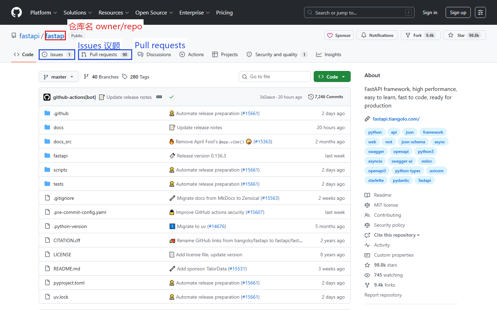
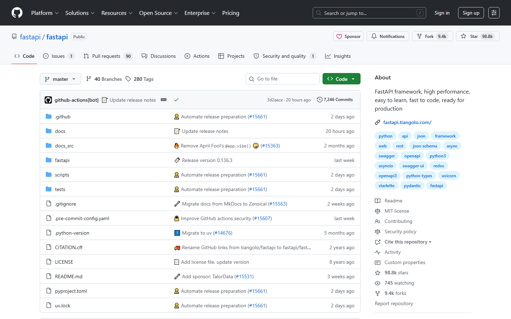
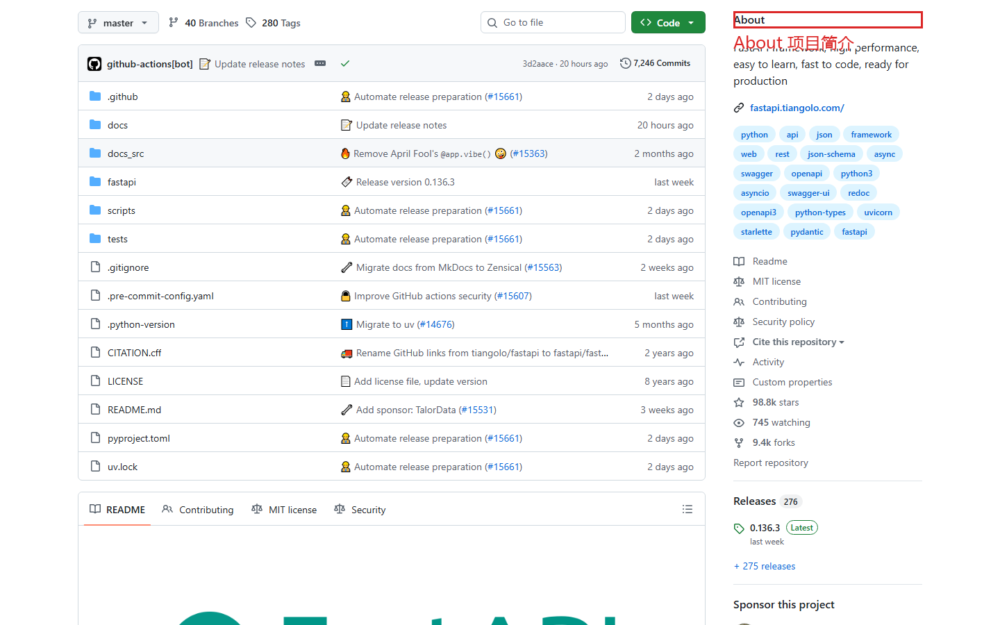
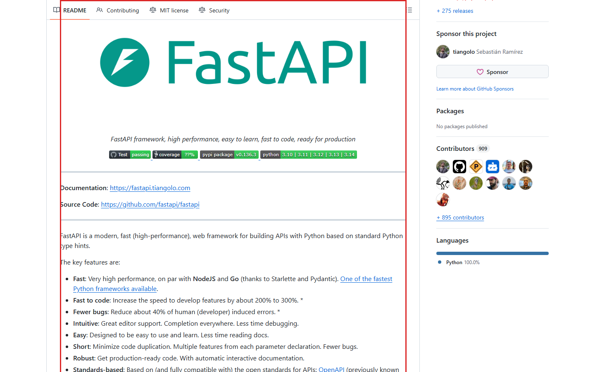
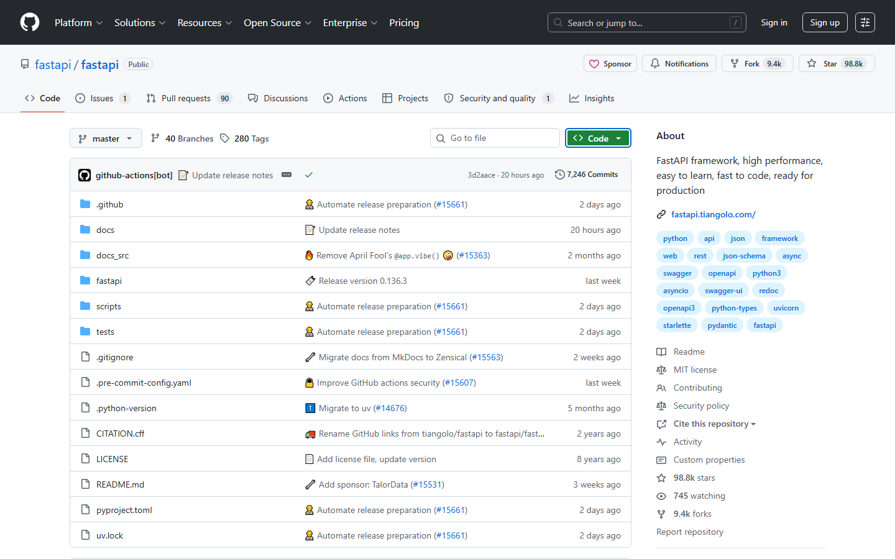

第二课：读代码（上）— 仓库主页全解
时长：25 分钟 | 前置：第一课 | P0 词条：21 个 | 覆盖 UI 元素：28 个
学习目标
学完这节课，你能：
- 看懂任意一个 GitHub 仓库主页的所有信息
- 区分 Star、Fork、Watch 三个按钮的用途
- 知道怎么下载代码（Clone vs Download ZIP）
- 理解文件列表里每一列的含义
- 通过右侧面板快速了解一个项目
0. 开场（2 min）
画面：打开一个热门仓库主页（推荐 https://github.com/tiangolo/fastapi，文件结构清晰，README 完整）

旁白：
"上节课我们注册了 GitHub。今天开始正题——当你打开一个仓库，满屏英文，每个区域到底在说什么？
我随便打开一个开源项目，比如 FastAPI。别被代码吓到，我们不读代码，我们只读界面。
这节课分四个区域讲：顶部导航栏、仓库头部、文件列表、右侧面板。学完之后，你打开任何仓库都能秒懂。"
1. 仓库级导航栏（3 min）
画面：从仓库页顶部开始，鼠标缓慢扫过

旁白："注意，这个导航栏和上节课讲的 GitHub 全局导航栏不一样。全局导航栏永远是黑色那条。这个是仓库内部的标签栏。"
1.1 仓库标签栏
| 标签 | 英文 | 中文 | 点了之后 |
|---|---|---|---|
| Code | Code | 代码 | 回到文件列表（你就在这） |
| Issues | Issues | 议题 | 这个项目的 Bug 报告和功能请求列表 |
| Pull requests | Pull requests | 拉取请求 | 别人给这个项目提交代码的地方 |
| Actions | Actions | 自动化 | 自动化测试、部署的运行记录 |
| Projects | Projects | 项目看板 | 任务管理看板（类似 Trello） |
| Wiki | Wiki | 维基文档 | 项目的文档页面 |
| Security | Security | 安全 | 安全漏洞、依赖扫描 |
| Insights | Insights | 统计分析 | 贡献者、流量、提交频率统计 |
| Settings | Settings | 设置 | 仓库设置（只有仓库管理员能改） |
重要：Settings 标签只有你有权限时才看得见。别人的仓库你看不到这个标签。
1.2 仓库名和可见性
| 元素 | 英文 | 说明 |
|---|---|---|
| 左上角 | owner / repo | 格式是"拥有者/仓库名"，比如 tiangolo/fastapi |
| 标签 | Public | 公开仓库，全互联网都能看见 |
| 标签 | Private | 私有仓库，只有自己和被邀请的人能看见 |
2. 仓库头部按钮（5 min）— 三个最易混淆的按钮
画面：鼠标依次指向 Star、Fork、Watch，逐一展开讲解

2.1 Star（收藏/点赞）
| 属性 | 说明 |
|---|---|
| 图标 | ⭐ Star |
| 中文 | 收藏 / 加星 |
| 点了会怎样 | 按钮变亮（Starred），这个仓库加入你的收藏列表 |
| 有什么实际用途 | 1. 以后在 Your stars 里快速找到 2. 给作者鼓励 3. 收藏数代表项目热度 |
| 能取消吗 | 再点一次（Unstar）就取消 |
操作演示：

【录屏】鼠标移动到 Star 按钮 → 点击 → 按钮变亮，数字 +1 → 再点一下 → 恢复
2.2 Fork（复刻）
| 属性 | 说明 |
|---|---|
| 图标 | 三叉图标 🔱 Fork |
| 中文 | 复刻 / 分叉 |
| 点了会怎样 | 弹出窗口，确认后会在你的账号下复制一份这个仓库 |
| 什么时候用 | 你想给这个项目贡献代码时，先 Fork 一份到自己名下，改完再提 PR |
| 能撤销吗 | 可以删除你自己名下的 Fork 仓库，不影响原项目 |
常见误解：Fork 不是"下载"，是在 GitHub 服务器上给你复制一份。你 Fork 之后，你的 GitHub 主页上会多一个同名的仓库。
操作演示：

【录屏】点击 Fork → 弹出"Create a new fork"窗口 → 点 Create fork → 等待几秒 → 跳转到你名下的新仓库
2.3 Watch（关注）
| 属性 | 说明 |
|---|---|
| 图标 | 👁 Watch |
| 中文 | 关注 / 监视 |
| 点了会怎样 | 弹出三个选项让你选通知级别 |
| 用途 | 决定这个仓库有动态时，你要不要收通知 |
Watch 选项详解（重要！）：
| 选项 | 英文 | 含义 |
|---|---|---|
| Participating | Participating, @mentions, and custom | 只在你被 @ 或参与了 Issue/PR 时通知 |
| All Activity | All Activity | 仓库有任何风吹草动都通知你（Issue、PR、Discussion 新发帖） |
| Ignore | Ignore | 永远不通知 |
| 左侧的 Custom | Custom | 自定义通知类型 |
实用建议：大多数情况保持默认"Participating"就行。除非你是项目维护者，否则别选"All Activity"，不然通知会爆炸。
3. 文件列表区域（8 min）
画面：鼠标移到仓库文件列表区域
3.1 分支选择器
| 元素 | 英文 | 中文 | 作用 |
|---|---|---|---|
| 左侧下拉框 | main / master | 分支名 | 显示当前查看的分支。main 是默认主分支 |
| 下拉箭头 | — | — | 点击展开所有分支和标签 |
| 旁边数字 | branches / tags | 分支数 / 标签数 | 该仓库有多少分支和标签 |
什么是分支（Branch）？
"分支就是同一个项目代码的不同版本。main 分支是主版本，其他分支可能是开发中的新功能。日常浏览代码，不用动这里，看 main 就够了。"
3.2 文件操作按钮行
| 按钮 | 英文 | 中文 | 点了之后 |
|---|---|---|---|
| 左侧下拉 | main | 分支选择 | 切换分支 |
| 输入框 | Go to file | 快速跳转文件 | 按 . 键快速搜索文件名 |
| 绿色按钮 | <> Code | 代码 / 下载 | 展开克隆和下载选项（下节详讲） |
| 白色按钮 | Add file | 添加文件 | 创建新文件或上传文件 |
| — | — | — | 只有你有写权限时才会出现 |
3.3 Code 按钮详解（重点！）
画面：点击绿色 <> Code 按钮，展开下拉面板
| 选项 | 英文 | 中文 | 什么时候用 |
|---|---|---|---|
| 顶部标签 | Local / Codespaces | 本地 / 云开发 | 选 Local |
| HTTPS URL | web URL | HTTPS 地址 | 用 git clone 命令下载时用这个 |
| SSH URL | git@github.com:... | SSH 地址 | 配了 SSH Key 就用这个（免密） |
| GitHub CLI | gh repo clone | GitHub CLI | 用 GitHub 命令行工具下载 |
| 蓝色按钮 | Open with GitHub Desktop | 用桌面版打开 | 装了 GitHub Desktop 的可以点 |
| 底部链接 | Download ZIP | 下载 ZIP 压缩包 | 不用 Git 命令，直接下载源码包 |
新手最常用的是 Download ZIP。不想折腾命令行，就点这个，下载解压就能看代码。
操作演示：
【录屏】点 Code → 鼠标移到 HTTPS → 点复制按钮 → "地址复制好了，在命令行 git clone 后面粘贴就行"
鼠标移到 Download ZIP → "如果你不熟悉命令行，点这个，直接下载 zip 压缩包"
3.4 文件列表
画面：文件列表，逐个元素讲解
| 元素 | 含义 |
|---|---|
| 文件夹图标 📁 | 文件夹，点击进入 |
| 文件图标 📄 | 文件，点击查看内容 |
| README.md | 项目的说明文档，GitHub 自动渲染成图文并茂的格式 |
| 右侧 Commit message | 该文件/文件夹最后一次修改的说明 |
| 右侧时间 | "3 days ago" = 3 天前修改的；"last year" = 去年 |
文件图标辅助理解：
.md— Markdown 文档.py— Python 代码.js— JavaScript 代码.ts— TypeScript 代码.yml/.yaml— 配置文件.json— JSON 数据/配置
4. 右侧面板（5 min）
画面：鼠标移到仓库右侧面板，从上到下
4.1 About（关于）
| 区域 | 英文 | 说明 |
|---|---|---|
| 标题 | About | 关于这个项目 |
| 描述 | Description | 一句话介绍这个项目是干什么的 |
| 链接 | Website link | 项目官网（如果有） |
| 标签 | Topics | 项目分类标签，比如 python web-framework api |
4.2 版本与包
| 元素 | 英文 | 说明 |
|---|---|---|
| Releases | Releases | 正式发布的版本。比如 "v1.0.0" 就是 1.0 版本 |
| Packages | Packages | 可安装的软件包（npm、Docker 镜像等） |
4.3 Languages（编程语言）
| 元素 | 说明 |
|---|---|
| 彩色条 | 各种编程语言的占比，颜色代表不同语言 |
| 百分比 | Python 64% 说明这个项目 64% 的代码是 Python 写的 |
用途：快速判断这个项目主要用什么语言写的，适不适合你的技术栈。
4.4 Contributors（贡献者）
| 元素 | 说明 |
|---|---|
| 头像列表 | 给这个项目提交过代码的人 |
| 头像右下角数字 | "+ 500 contributors" 表示有超过 500 人参与 |
| 点击 | 跳转到贡献者详细统计页面 |
4.5 仓库统计信息（部分仓库）
| 元素 | 说明 |
|---|---|
| 眼睛图标 👁 + 数字 | Watching 人数 |
| 叉子图标 🔱 + 数字 | Fork 数量 |
| 星星 ⭐ | Star 数量 |
5. README 区域（2 min）
画面：鼠标滚轮向下滚动到 README 区域
旁白：
"文件列表下面是 README.md，这是整个仓库最重要的文件。GitHub 会自动把它渲染成图文格式。
每个仓库的 README 内容不同，但通常包括：
- 项目介绍（这是什么）
- 安装方法（怎么用）
- 示例代码
- 文档链接
浏览一个陌生仓库时，第一个要读的就是 README。"
6. 常见误区提醒（2 min）
-
"我看不懂代码，所以不敢看 GitHub"
→ 不需要。你可以只看 README 了解项目是干什么的、看 Star 数判断热度、看 Issue 看有没有人用。 -
"Star 就是点赞，点了没事"
→ 没错，但 Star 会留在你的收藏列表里，别人也能看到你 Star 了什么。 -
"Fork = 下载"
→ 不是。Fork 是在 GitHub 上复制一份。下载是 Clone 或 Download ZIP。 -
"Private 仓库就绝对安全"
→ 不是。Private 只是不公开，但 GitHub 员工理论上可以访问。敏感代码自己搭 GitLab。
课后作业
- 打开你喜欢的任意开源项目（如 ant-design、vue、fastapi），完成以下练习：
- 找出 Star 数、Fork 数、使用的编程语言
- 向下滚动读一遍 README（借助浏览器翻译插件）
- 点击 Code 按钮，找到 Download ZIP 选项
- 点一下 Watch 按钮，看看三个选项长什么样（不要确认）
- 找三个不同语言的仓库，对比 Languages 彩色条（截图）
本课术语速查
{.glossary-table}
| 英文 | 中文 | 出现位置 |
|---|---|---|
| Repository | 仓库 | 整个页面的主题 |
| Star | 收藏/加星 | 仓库头部按钮 |
| Unstar | 取消收藏 | 已经 Star 后再点 |
| Fork | 复刻/分叉 | 仓库头部按钮 |
| Watch | 关注/监视 | 仓库头部按钮 |
| Participating | 参与中（通知级别） | Watch 下拉选项 |
| All Activity | 所有动态 | Watch 下拉选项 |
| Ignore | 忽略（通知级别） | Watch 下拉选项 |
| Branch | 分支 | 左上角下拉框 |
| main / master | 主分支 | 分支选择器默认值 |
| Go to file | 快速跳转文件 | 文件列表上方 |
| Clone | 克隆（下载仓库） | Code 按钮下拉 |
| Download ZIP | 下载 ZIP 压缩包 | Code 按钮下拉 |
| README.md | 说明文档 | 文件列表 |
| Commit message | 提交信息 | 文件列表右侧 |
| Issues | 议题 | 顶部标签栏 |
| Pull requests | 拉取请求 | 顶部标签栏 |
| Actions | 自动化 | 顶部标签栏 |
| Public | 公开（仓库可见性） | 仓库名旁边 |
| Private | 私有（仓库可见性） | 仓库名旁边 |
| Languages | 编程语言占比 | 右侧面板 |
| Contributors | 贡献者 | 右侧面板 |